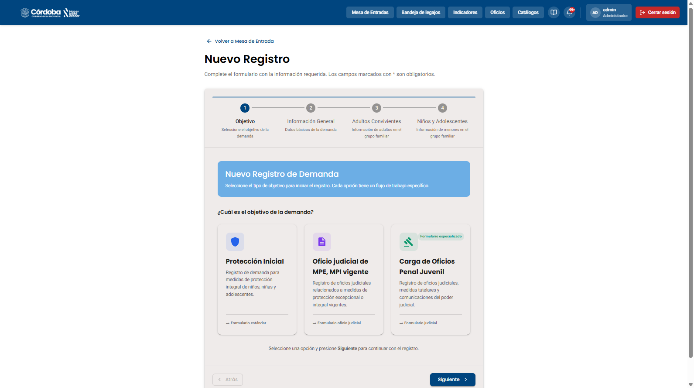
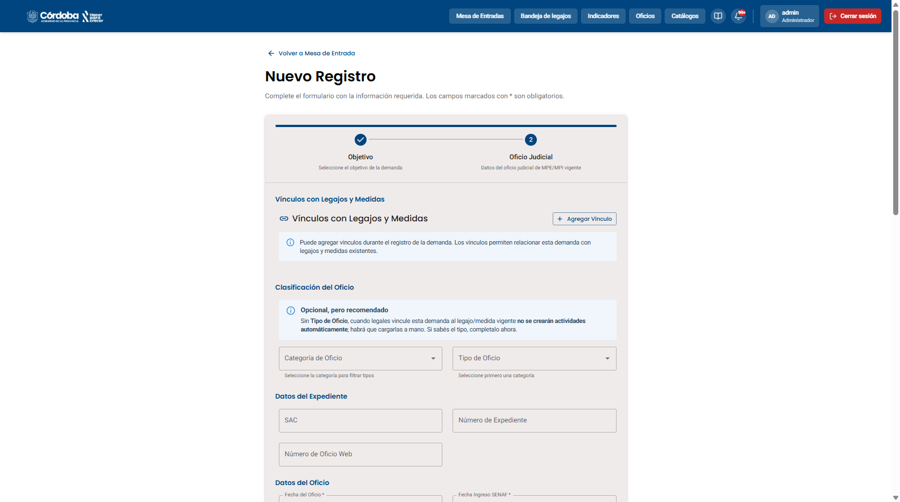
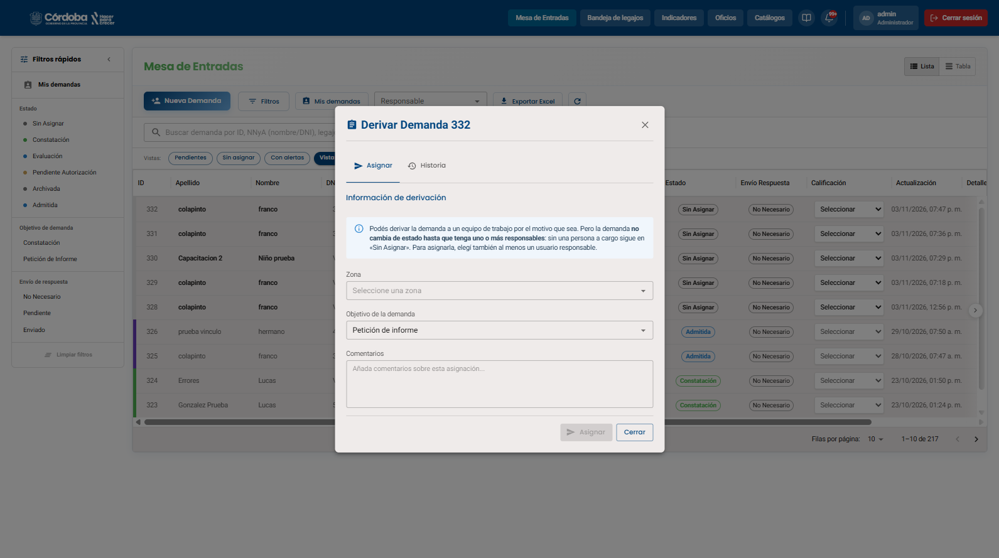
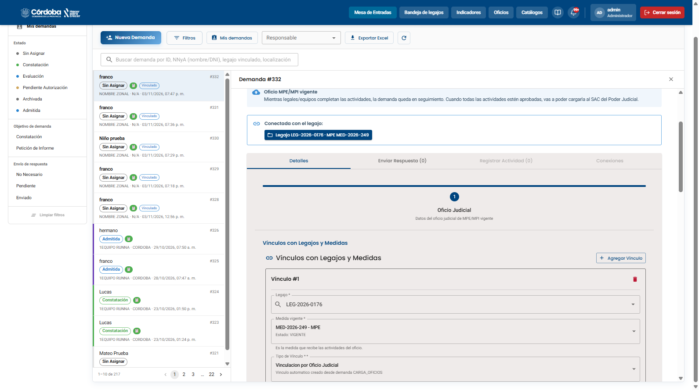
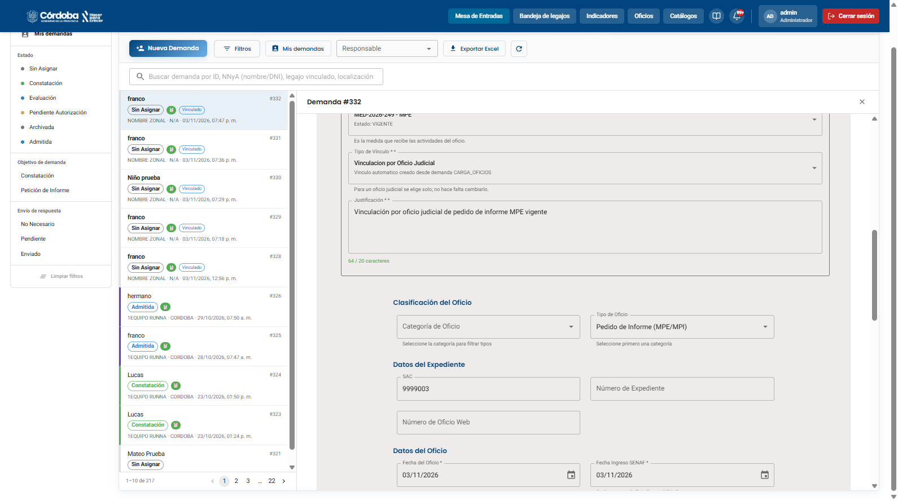
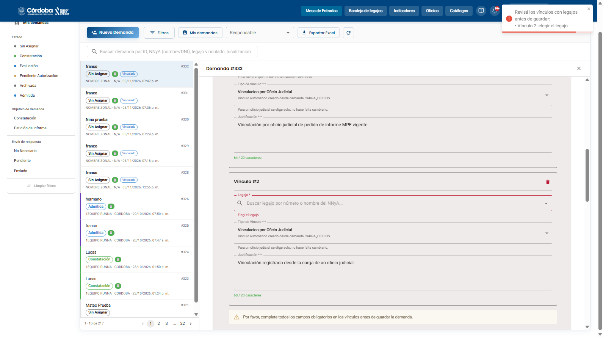
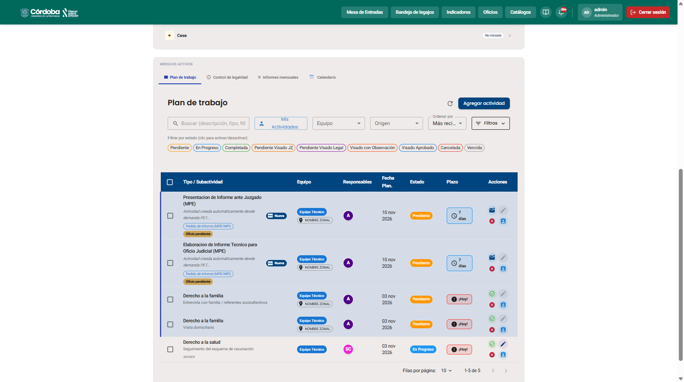

Cuando el Poder Judicial pide un informe sobre una medida de protección que ya está vigente, el oficio se carga con su propia tarjeta, se vincula al legajo y a la medida, y el tipo de oficio agrega las actividades predefinidas al plan de la medida. Acá vemos el recorrido completo, desde la carga hasta ver las actividades en la medida.






